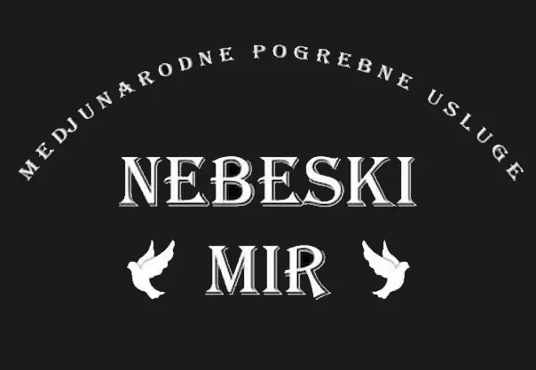
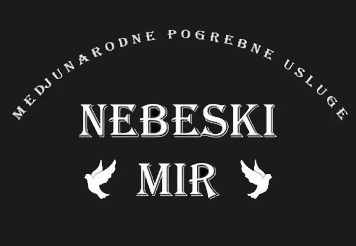

INTERNACIONALNI PREVOZ
Nebeski mir
omogućava prevoz pokojnika sa bilo kojeg mesta u Evropi nazad u Srbiju ili region.
Uz prevoz takođe završavamo i papirologiju neophodnu za održavanje sahrane.
U papirologiju spadaju podizanje tela i preuzimanje potvrde o smrti,
odlazak u opštinu po izvod iz matične knjige umrlih,
odlazak u sanitarnu policiju na pregled kvaliteta opreme i još jednu potvrdu doktora da je lice preminulo,
dobijanje dozvole za transport tela unutar Evropske unije, odlazak u ambasadu i vađenje sprovodnice.
Vršimo sprovode, organizujemo cvetne aranžmane i imamo široki izbor pogrebne opreme.
Potrebna dokumentacija:Dokumentacija koju Vi treba da imate pre dolaska našeg vozača su:
- Pasoš preminule osobe
- Izvod iz matične knjige rođenih (internacionalni)
- Izvod iz matične knjige venčanih (internacionalni)
- Potvrda o grobnom mestu (po potrebi)
Za sve nedoumice možete nas kontaktirati na broj +381615122211